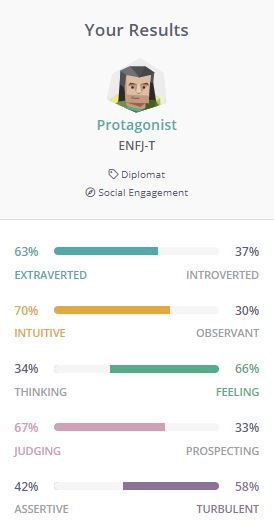
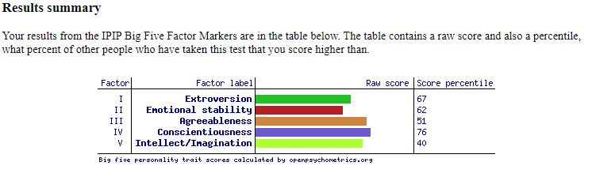
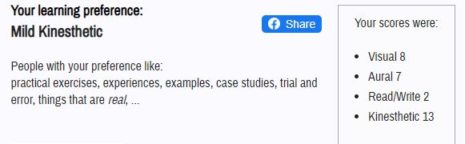

Myer Briggs Test
The Big Five Personality Test
THe Learning Style Test
Summary
The results from the Myer-Briggs and the Big Five personality tests indicate that I display traits of extroversion, am a good judge of character, easily empathise with others, and often rely on my intuitions and gut feelings rather than thinking logically. The tests also pointed out the flaws in my personality. I can be a bit emotionally unstable as I often get agitated by the smallest things, I worry too much about others’ issues and problems, accepting criticisms is rather difficult for me and I tend to struggle with making tough decisions. Although these results are somewhat true to a certain degree, I’ll always take it with a grain of salt as I don’t much like the idea of being told who I am and what my strengths and weaknesses are by a questionnaire.
Being a “protagonist” and scoring an adequate mark for extroversion (according to the Myer-Briggs’ and the Big Five personality test), even though I’ve always considered myself as introverted, means that I’ll work better in a team environment. I’ve always preferred working by myself as I don’t really need to bother explaining my process on how I approach different things but I can also see the merits in working as a team. The most impactful benefit for working in a team is that you not only get your own thoughts and opinions on topics/things, but also the different inputs and perspectives of your team members will be contributed as well. In order for a team to function well, I believe every member should contribute and put in as much effort as everyone else.